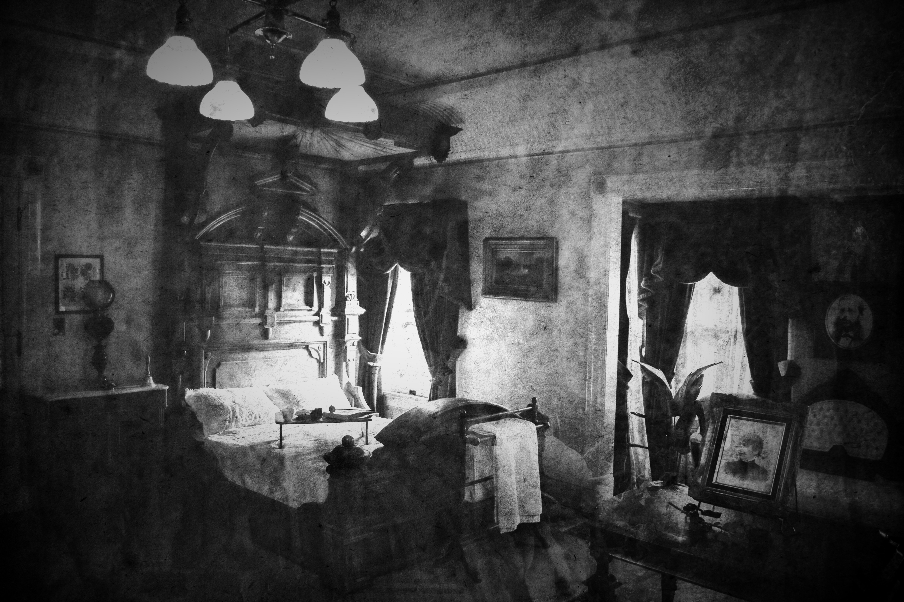

Photography


Deers
October 12th, 2019 edited
In fact, I do not know what kind of name should I make for those photos that I took. Becasue those photos was shot by accident. These deers was appear in Rancho San Antonio Preserve, and those deer was the time that I plan to go back to home.
Those photos are the part of the assignment of the Photographty class. For me, I think these are my favorite photos. It's not mean how great shot of those two. I was surprised how great capture of those movemnet.


Nature Relative
October 20th, 2019 edited
Those photos was shot on the walkway of the Poplar Beach.
Those images was still working for the assignment of the Photography course. My camera is Nikon D3500, and those photos has been edited with Photoshop after taking the picture. I was very impressived they have the great effect with camera.

De Profundis
October 20th, 2019 edited
This one is one of the Vest work that I did in the whole Photography. This tree at least has 30 years in the Poplar and looks like falling down by wind.
I am very suprise the nature, the nature of the earth can give us lots of imrpession view on each place. Sometimes we still can capture those movements by our hand.


The Old Mystery
November, 2019 edited
Those images I shot in the Winchester House in Saratoga, CA on the weekend for the last Photography of the class assignment.
How to feel redefine the past is the most challenge works of this assignment. The camera only may capture the movement that shows recently. How to feels the memories of the time. I have no ideas. So, the only way that I can process is due the photos with the old fashion style. As you see the works of each assignment, I used 3 layers (or 3 images) for each photo, and each photo I used double exposure to set the effect.